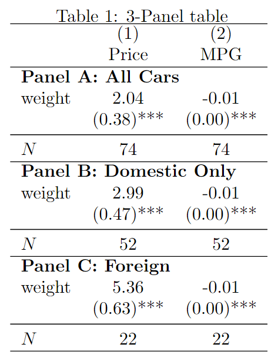

**# REGRESSIONS
***************
//---PANEL A: ALL CARS---//
eststo priceA: reg price weight
eststo mpgA: reg mpg weight
//---PANEL B: DOMESTIC CARS---//
eststo priceB: reg price weight if foreign == 0
eststo mpgB: reg mpg weight if foreign == 0
//---PANEL C: FOREIGN ONLY---//
eststo priceC: reg price weight if foreign == 1
eststo mpgC: reg mpg weight if foreign == 1
**# ESTOUT
**********
//general options - same in every panel
local gops b(2) se(2) noconstant ///
starlevel(* 0.10 ** 0.05 *** 0.01) staraux ///
fragment booktabs
//---PANEL A---//
//Latex code - different for each panel
local preheadA "\begin{tabular}{l*{@M}{c}} \hline" //only need in first panel
local postheadA "\hline \multicolumn{@span}{l}{\textbf{Panel A: All Cars}} \\"
esttab priceA mpgA ///
using "output/multi_panel.tex", replace ///
`gops' ///
mtitle("Price" "MPG") ///
prehead(`preheadA') posthead(`postheadA')
//---PANEL B---//
//Latex code
local postheadB "\hline \multicolumn{@span}{l}{\textbf{Panel B: Domestic Only}} \\"
esttab priceB mpgB ///
using "output/multi_panel.tex", append ///
`gops' ///
nonumber nomtitle ///
posthead(`postheadB')
//---PANEL C---//
//Latex code
loc postheadC "\hline \multicolumn{@span}{l}{\textbf{Panel C: Foreign}} \\"
local postfootC "\hline \end{tabular}"
esttab priceC mpgC ///
using "output/multi_panel.tex", append ///
`gops' ///
nonumber nomtitle ///
posthead(`postheadC') postfoot(`postfootC')
Stata-to-LaTex: Estout tables with multiple panels
My favourite thing to do in Stata, and the thing I probably spend the most time playing around with is producing tables using Ben Jann’s esttab. While it is a fantastic package that allows you to create almost any publication-ready table output you could think of, how exactly you can create that specific table is not always clear.
One example that is not particularly straightforward, yet seems rather common in publications, is a table with multiple panels. For example, if you are running regressions on the same few dependent variables, but for different groups or samples, then it is convenient to display these results in the same table, with a separate panel for each group (e.g. Panel A: Urban, Panel B: Rural, etc.). While the online help files provide many great examples, there isn’t one for this purpose, and although I am not the first to write up an example online (See this Github repository from Luiza Andrade), I wanted to write this up as a reference for myself and hopefully anyone else who stumbles across it!
If you are interested in other stuff to do with esttab, why not look at the wrapper package sideytab which I wrote to make it easier to produce “flipped” esttab tables, where the dependent variable/model name is displayed in each row, with each independent variable as a different column. See the Github repository here which includes an online helpfile with examples.
While esttab and its companion commands estadd, estpost, eststo and estout have many great features, not everything is possible just using Stata syntax. However it is possible to extend the functionality of esttab using some simple LaTeX script. I will explain these below in turn. The table we will produce will have 3 panels, but this can be extended to an arbitrary number by repeating the code for the second panel. The output looks like this:

and the code in full:
Global options
Lets breakdown the key components here, starting with the local 'gops' which contains all the options which remain the same across all panels. Most important are the options fragment which tells esttab to suppress the LaTeX opening and closing code it usually includes in .tex output, and booktabs which tells esttab to output the table in a format recognised by the \booktabs{} package.
Another thing to notice is that while in the first call of esttab we tell it to replace/overwrite the file output/multi_panel.tex, subsequent calls use append to add the newly generated table content to the same file. This is important, otherwise you won’t end up with a complete LaTeX table.
Next we look at the LaTeX code that is specific to each panel.
Panel A (the first panel)
This is the first panel of the table, and is the first thing esttab writes to a new file. As we tell esttab to suppress the opening and closing material for the table, we need to add this manually. We do so through the prehead() option. We specify:
"\begin{tabular}{l*{@M}{c}} \hline"Which begins the tabular environment, the default LaTeX method to create tables. We specify the parameter {l*{@M}{c}}, where @M is an esttab substitution function which is replaced by the number of models in our table (here 2 models, priceA and mpgA). This is a macro which is expanded to give a table with centered ({c}) columns equal to the number of models (l*{2}). finally we draw a horizontal line at the top of the table with \hline (\toprule can also be used). For this panel, we want to display the headings for each column, which relate to the model title. We do this using the mtitle() option.
Next is the panel title “Panel A: All Cars” which comes immediately after the headings. It is specified using the aptly-named posthead() option, for which we enter:
"\hline \multicolumn{@span}{l}{\textbf{Panel A: All Cars}} \\"The command \multicolumn{} tells LaTeX the bolded text “Panel A: All Cars” spans across multiple columns, with the option [l] telling it that it should be left aligned (or [c], [r]). The first set of curled brackets tells it how many columns to span, with @span being another esttab substitution function which provides the total number of columns for the table. Finally \\ takes a new line before pasting in the rest of the table.
Panel B (or however many “middle” panels you have)
For all panels which are not the first, I don’t like to repeat the model titles or numbers, so I specify nomtitle and nonumbers. For all middle panels we dont need to specify a prehead() option. The main change in terms of LaTeX code is that we change the text to be displayed to be as the panel title through the posthead() option:
"\hline \multicolumn{@span}{l}{\textbf{Panel B: Domestic Only}} \\"Which prints a horizontal line followed by a left-aligned Panel B: Domestic Only between the previous panel and this panel’s content. Finally, remember to use the append option or else esttab will overwrite your 1st panel in the output!
Panel C (the last panel)
Here we again specify nomtitle nonumbers, append, and the panel heading using posthead(). The key difference for this final panel is we must also provide the latex code to close the tabular environment (as well as place a final horizontal rule at the bottom of the table!) . We specify this using the postfoot() option, most simply with:
"\hline \end{tabular}"Conclusion
This is a basic example with detailed explanation of the required esttab syntax as well as the LaTeX code, which I often find the most confusing aspect! I might add to this later to include various flourishes, including super-column grouping of models (via mgroup() and a bit of LaTeX), custom p-values and brackets, added statistics, etc.
The output for this tutorial in LaTeX is available to view via Overleaf here.